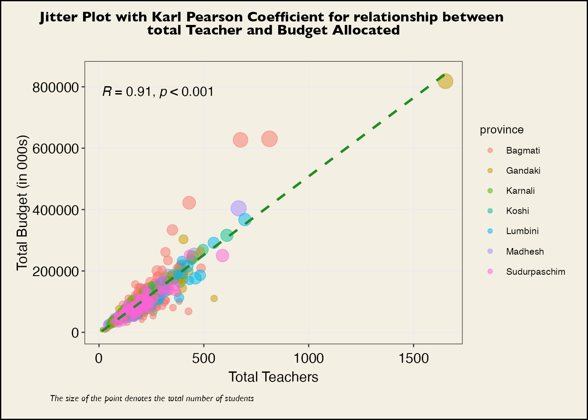
Introduction
This exercise is an attempt to analyse conditional grants as allocated by the Federal Government of Nepal for education at Local Level. Pursuant to the constitution of Nepal, the basic education falls within the power of the Local Level Governments.
The legacy of pre-federal education system still holds a strong grip in the Education Sector in Nepal including those in the Local Level - which have constitutional power of Basic Education. This means, the federal government have had hands-on approach in matters of resource allocation for the publicly funded school at local level, via conditional grants. The conditional grants for education targeted at publicly funded schools at local level comprises a significant chunk of total government spending for any single program.
While there exists significant and acute [horizontal] fiscal imbalance among local level governments to run and operate their constitutional mandate of basic education, which makes it only imperative for federal government to intervene and correct the imbalance. However, the modus operandi of federal government of Nepal in allocating resources to counter the pervasive fiscal imbalance in Education Sector in Local Level has not been within the spirit of constitutional mandate. In practice public education system is being run as a federal program; for example, in the Fiscal Year 2080-81, the federal budget had 18 different activity code amounting to 135 billion rupees for 753 Local Level Government under conditional grants for education. The level of micro-management in resource allocation of education sector is not only against the spirit of constitution and federalism, it also adds administrative cost to federal government.
This exercise makes an attempt to analyse data on budget and school to understand budgetary allocation under conditional grant from federal government to local government which could be used to identify possible alternative methods to decentralize the process such that Local Level government are empowered to exercise their constitutional power of basic education.
Federal Education grant - a function of number of teachers
A big portion of the conditional grant to local level government is comprised of salary of teachers. A total of 54.93% of total budgetary allocation made to Local Level, as Conditional Grants, comprises of salary of expenses of teachers of Basic Level (from Grade 1 to 8) (Activity 1.1.3.3). This suggests that grants (for activity 1.1.3.3) are directly correlated with total number of teachers at each local level. Figure 1 validates this relationship with Correlation Coefficient at 0.91 which suggests a strong correlation between the variables ie total number of teachers and budget allocated (for activity 1.1.3.3).
An alternative method for allocating grants that comprises salary of teachers need to be devised. One of the parameters (among combination of other) for such alternative method could be student teacher ratio.
Student-teacher ratio - Could it be an alternative ?
First lets compute student teacher ratio for Grades 1 to 8 (Basic Education).
| Characteristic | Bagmati N = 119 |
Gandaki N = 85 |
Karnali N = 79 |
Koshi N = 137 |
Lumbini N = 109 |
Madhesh N = 136 |
Sudurpaschim N = 88 |
|---|---|---|---|---|---|---|---|
| Student Teacher Ratio | |||||||
| Mean | 16.15 | 10.52 | 27.01 | 16.53 | 27.04 | 63.02 | 25.20 |
| SD | 8.67 | 5.58 | 8.90 | 6.23 | 13.23 | 25.71 | 7.86 |
| Min | 3.62 | 0.00 | 8.94 | 7.19 | 5.60 | 17.67 | 12.81 |
| Max | 41.80 | 31.86 | 49.22 | 39.94 | 71.44 | 184.70 | 50.42 |
Lets examine the relationship of student-teacher ratio and budget allocated at each LG.
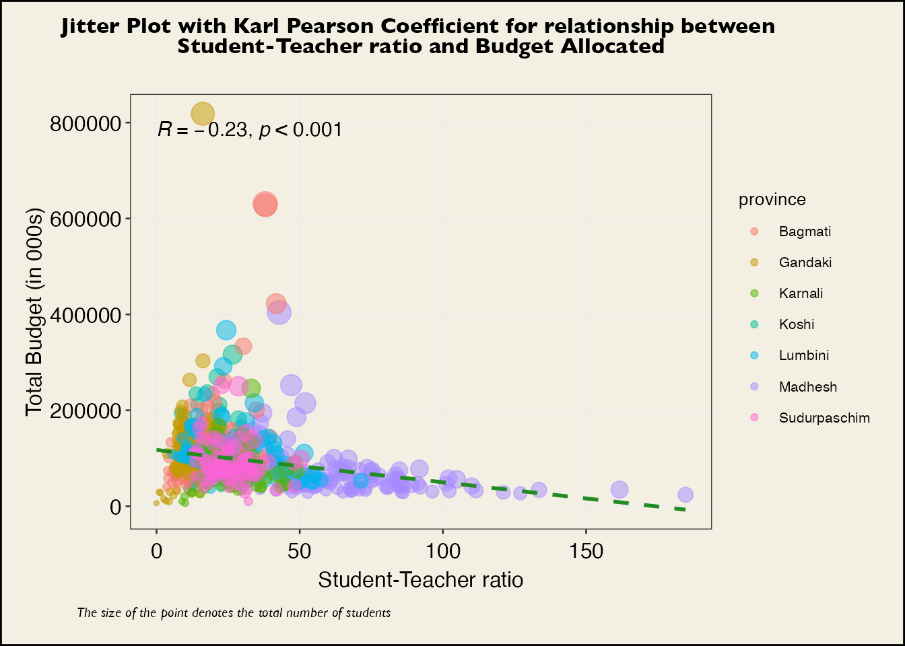
The Figure 2 suggests a very weak and negative correlation between student-teacher ratio and total grants (for activity 1.1.3.3). The Figure 3 below should provide a more clearer view into the matter.
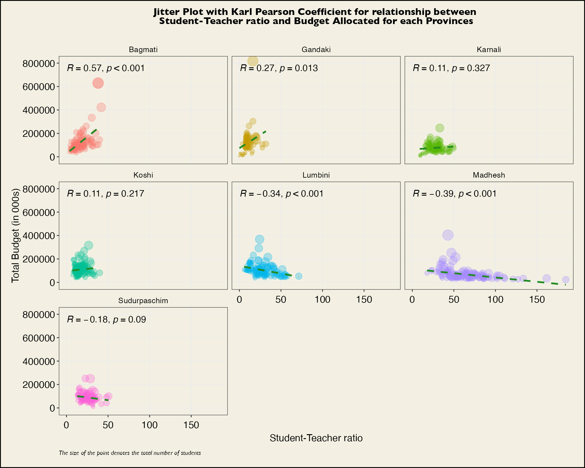
The extreme variance of correlation among various Provinces is an indication of disproportionate student-teacher ratio and its relationship with total grants allocated. A closer and deeper analysis of Bagmati Province (maybe to deduce a minimal national standard) and Madhesh Province (to understand characteristics of what is wrong !) would be an interesting exercise.
Student - teacher ratio in heat map
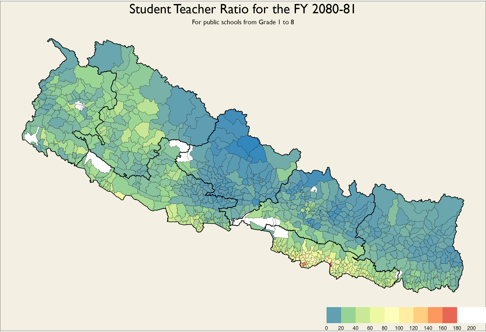
The heat map Figure 4 above, clearly illustrates disproportionately high student teacher ratio in Madhesh Province. Lets examine features of Madhesh Province in regard to student teacher ratio.
The curious case of Madhesh !
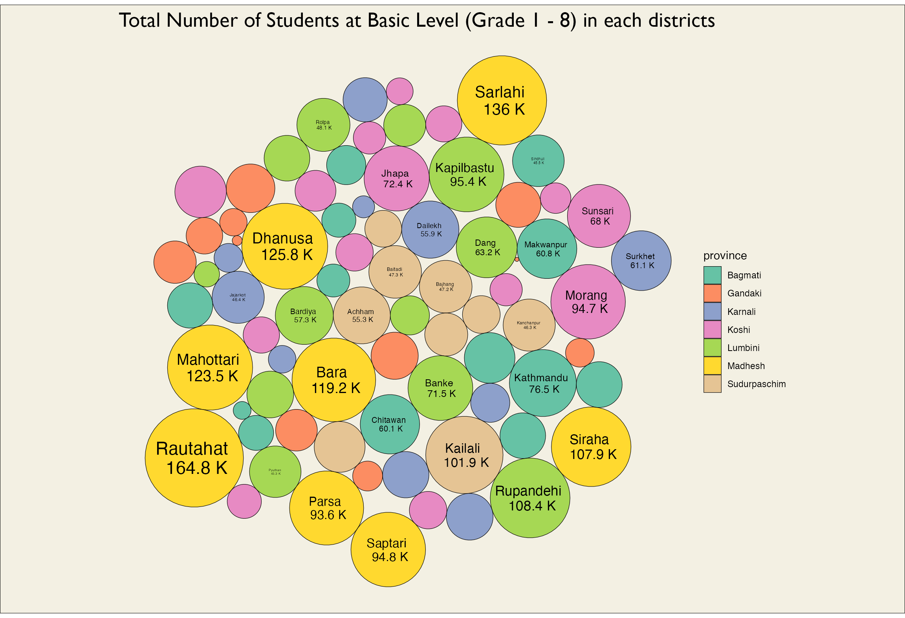
Above Figure 5 makes it very clear that the districts in Madhesh provinces have highest highest number of students who go to public school for Basic Education. Lets attempt to look into the total number of teachers at each district to make an assessment.
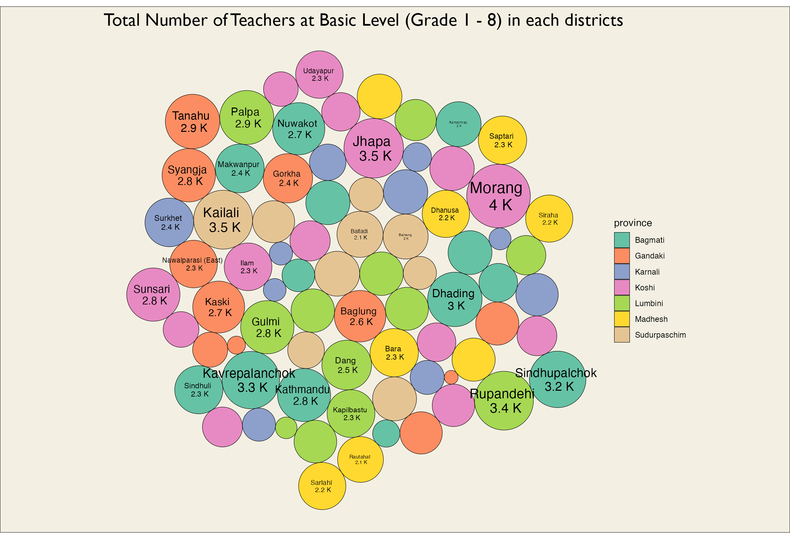
The Figure 6 clearly illustrates the fact that even though the districts in the Madhesh Province have highest concentration of students, the total number of teachers (independent of total number of students) in districts of Madhesh Province is not among the top districts with high amount of teachers.
Maybe be total number of schools in districts will help explaining the higher student teacher ratio in Madhesh (and in doing so provide a general rationale for teacher allocation in Nepal)
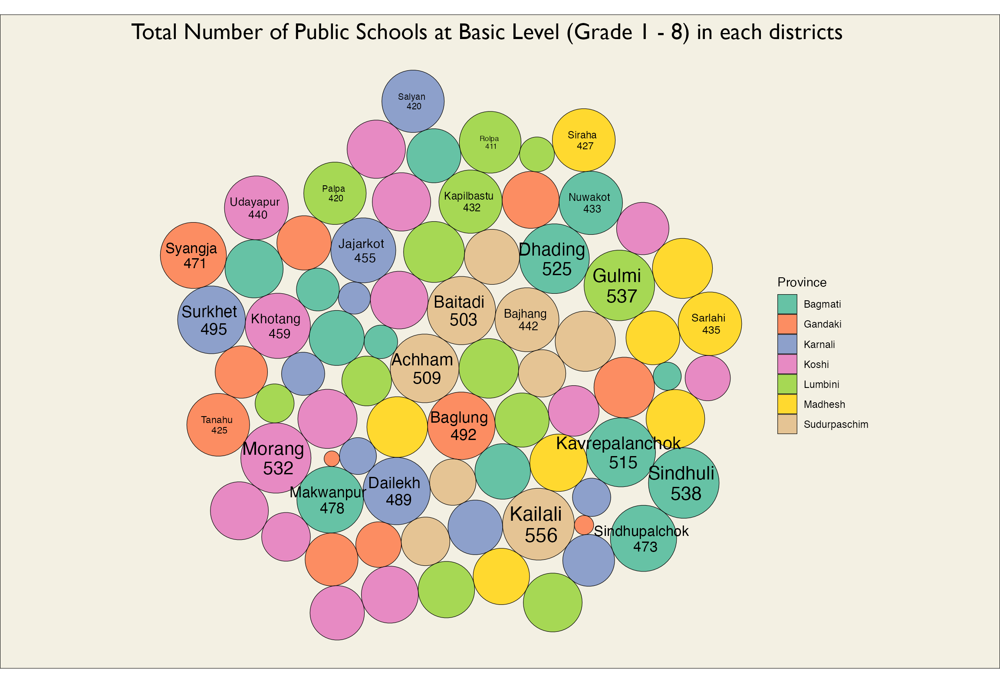
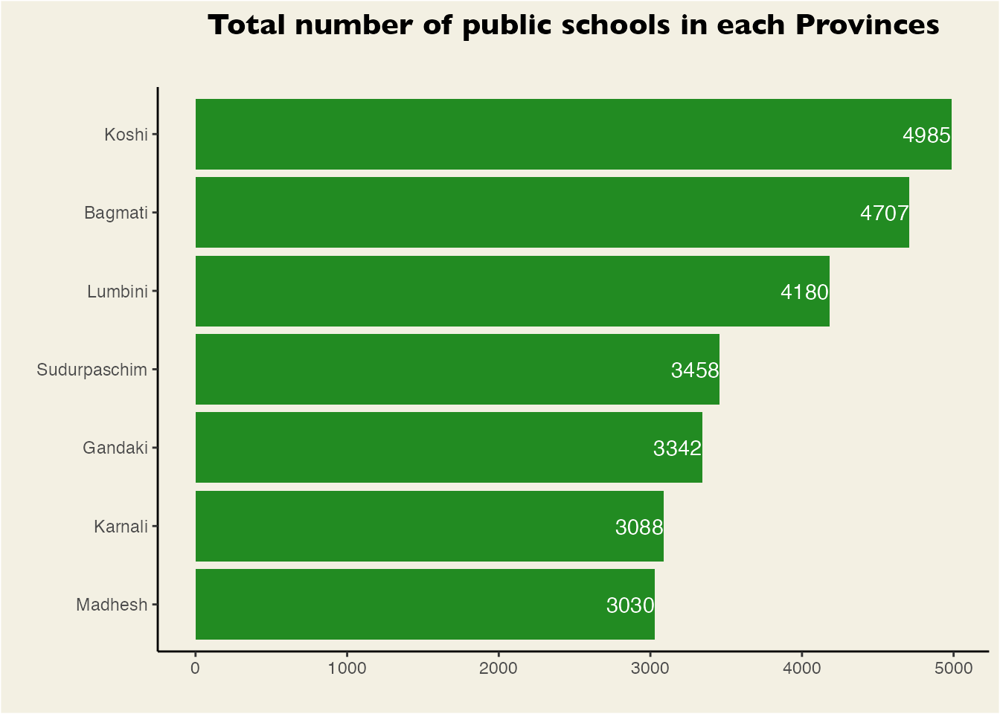
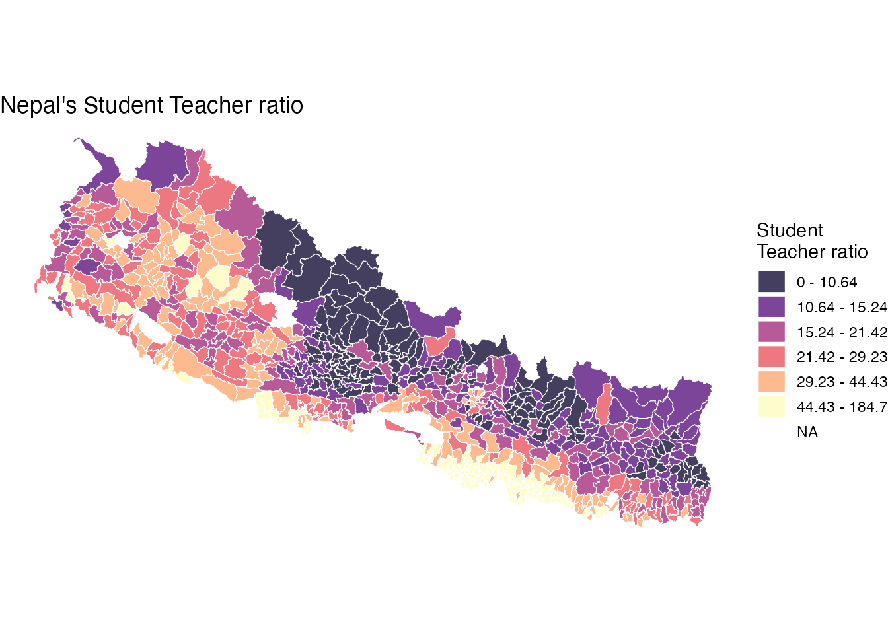
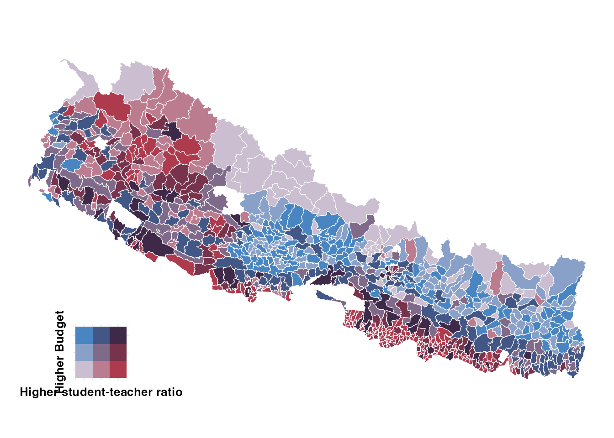
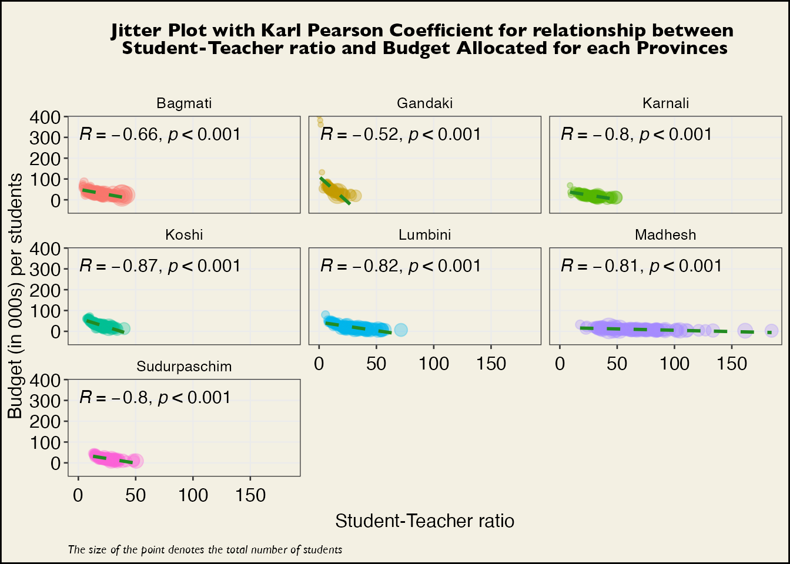
No matching items